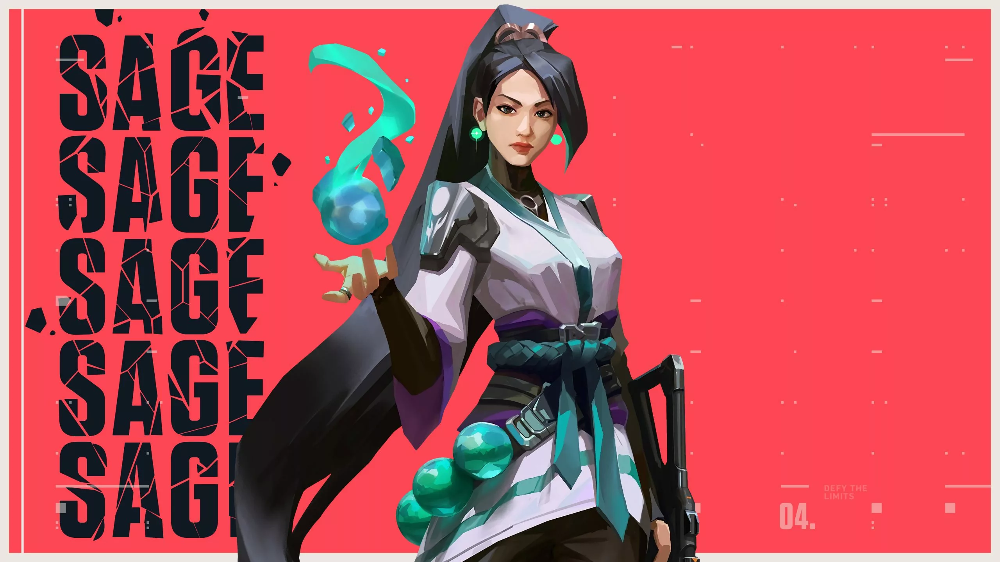
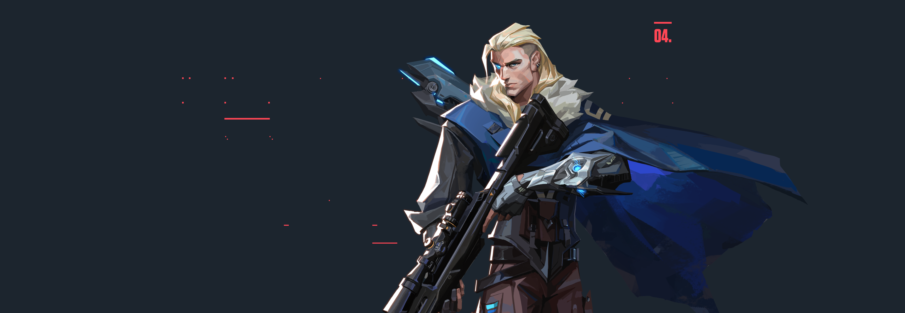
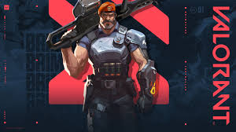
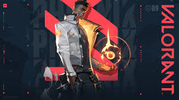
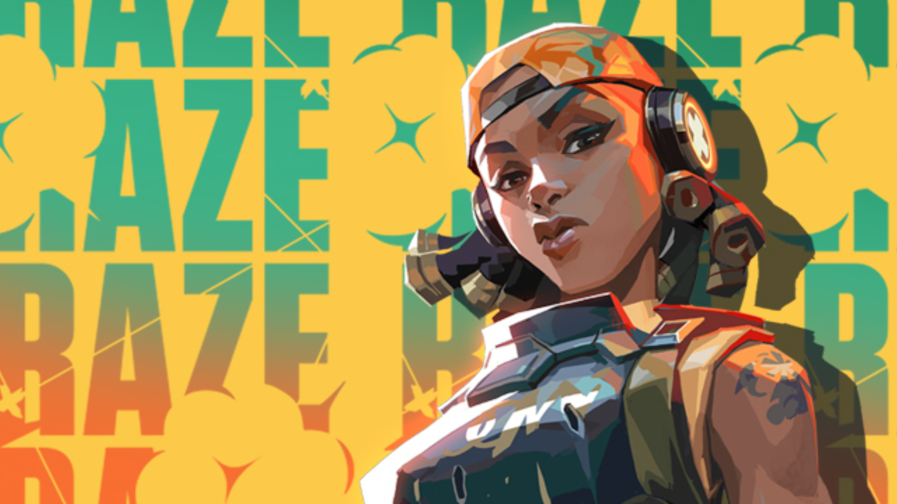
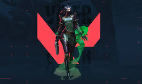

Sentinel agent in the tactical shooter game Valorant. Known as the "bastion of China," her abilities focus on healing and area denial, providing support and safety for her team.
- Healing Orb (E): Sage can equip a healing orb to restore an ally's health over time. If she has taken damage, she can also use it to heal herself.
- Barrier Orb (C): Sage can deploy a large barrier that blocks enemy fire and heals allies who pass through it.
- Slow Orb (Q): Sage can throw a sphere that slows down enemies caught in its radius, making it easier for her team to engage or disengage.
- Resurrection (X): Sage can bring a fallen ally back to life, fully healed and ready to fight again.

Initiator agent specializing in reconnaissance and information gathering. His abilities allow him to reveal enemy positions and track their movements.
- Owl Drone (E): Sova can deploy a drone that can be controlled to scout enemy positions and gather intel.
- Recon Bolt (C): Sova can fire a bolt that reveals enemies in its radius, providing valuable information to his team.
- Hunter's Fury (Q): Sova can fire a series of arrows that deal damage and reveal enemies in their path.
- Resurrection (X): Sova can bring a fallen ally back to life, fully healed and ready to fight again.

Controller agent known for his ability to manipulate shadows and teleport across the map. His skills create confusion and strategic advantages.
- Shrouded Step (E): Omen can teleport a short distance to a nearby location, allowing him to reposition quickly.
- Paranoia (C): Omen can send out a shadowy projectile that nearsights and deafens enemies in its path.
- Dark Cover (Q): Omen can deploy a sphere of smoke that obscures vision and provides cover for his team.
- From the Shadows (X): Omen can teleport anywhere on the map, but if he is spotted, he will be sent back to his original location.

Controller agent specializing in area denial and smoke deployment. His abilities allow him to control the battlefield and provide valuable intel.
- Sky Smoke (E): Brimstone can deploy up to three long-lasting smoke clouds from an orbital cannon using a tactical map.
- Incendiary (Q): He launches a grenade that creates a damaging fire zone on the ground.
- Stim Beacon (Q): Brimstone can deploy a beacon that provides a temporary speed boost and fire rate increase to allies within its radius.
- Orbital Strike (X): Brimstone can call in a powerful airstrike on a designated area.

Duelist agent known for his ability to heal himself and create fire-based abilities. His skills allow him to take aggressive fights and outmaneuver enemies.
- Blaze (E): Phoenix can create a wall of fire that blocks vision and damages enemies who pass through it.
- Curveball (C): Phoenix can throw a flare orb that curves around corners, temporarily blinding enemies.
- Hot Hands (Q): Phoenix can throw a fireball that explodes after a delay, dealing damage to enemies and healing himself.
- Run It Back (X): Phoenix can mark his current location and, if he dies while the ability is active, he will be revived at that location.

Controller agent specializing in information gathering and surveillance. His abilities allow him to gather intel on enemy positions and movements.
- Cyber Cage (E): Cypher can create a cage that blocks vision and makes noise when enemies pass through it.
- Trapwire (C): Cypher can place a tripwire that reveals and stuns enemies who cross it.
- Spycam (Q): Cypher can deploy a camera that he can control remotely.

Duelist agent known for her explosive abilities and area denial. Her skills allow her to deal significant damage and control the battlefield.
- Blast Pack (E): Raze can throw a pack that explodes after a delay, dealing damage to enemies and propelling her into the air.
- Paint Shells (C): Raze can throw a cluster grenade that splits into smaller grenades, dealing damage in a wide area.
- Boom Bot (Q): Raze can deploy a robot that hunts down enemies and explodes on contact.
- Showstopper (X): Raze can equip a powerful rocket launcher that deals massive damage in a large area.

Controller agent known for her toxic abilities and area denial. Her skills allow her to control the battlefield and provide valuable intel for her team.
- Snake Bite (E): Viper can throw a projectile that creates a damaging area of effect on impact.
- Toxic Screen (C): Viper can create a wall of toxic gas that blocks vision and damages enemies who pass through it.
- Poison Cloud (Q): Viper can deploy a cloud of poison that damages enemies over time.
- Viper's Pit (X): Viper can create a large area of toxic gas that reduces enemy vision and health.